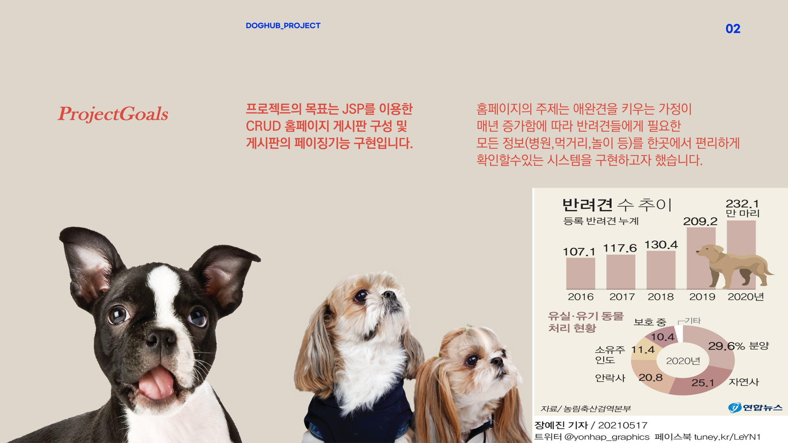
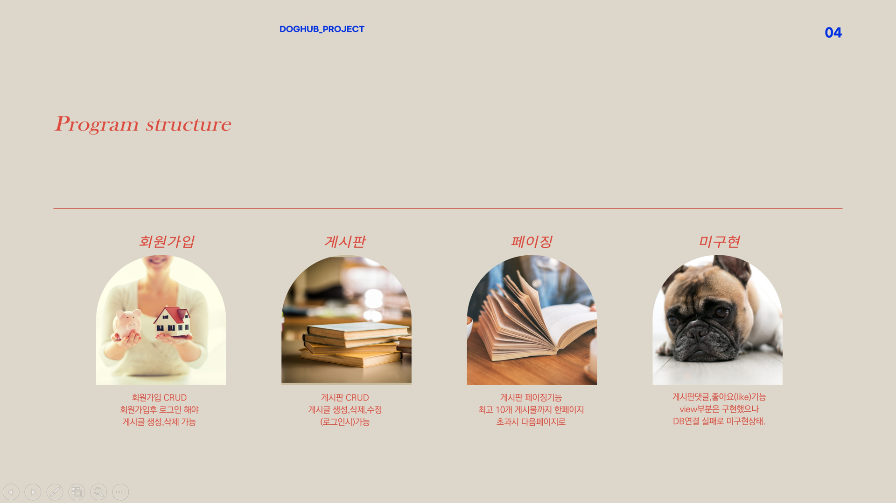
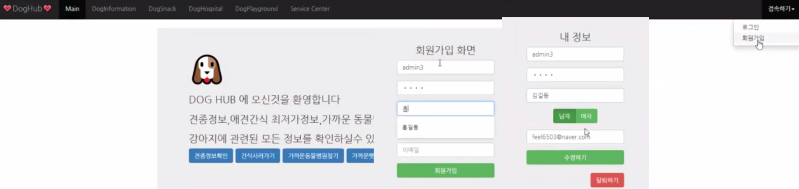
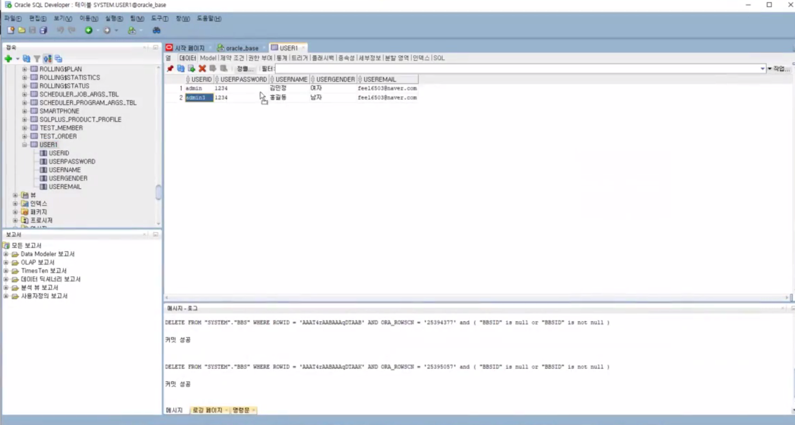
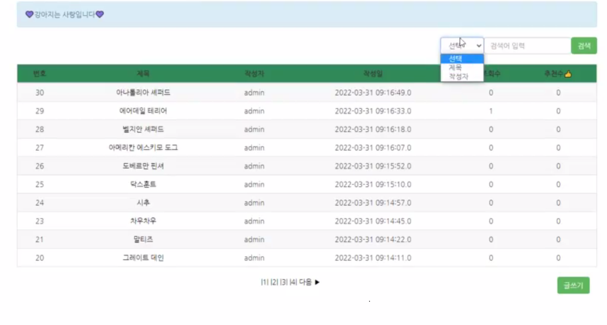
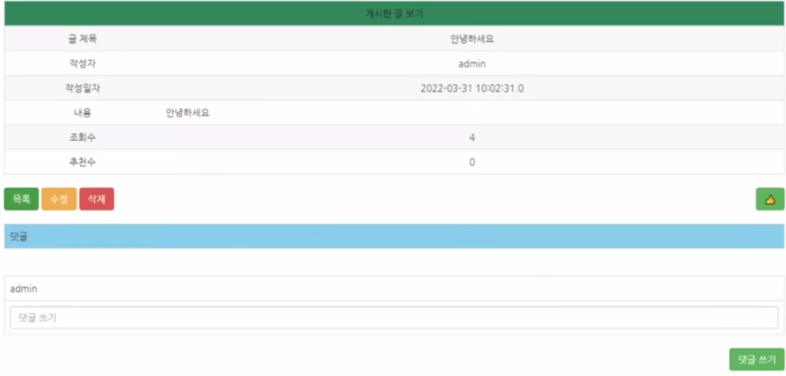

Demonstrate the project
Dog information Homepage
강아지 관련 정보(견종정보,동물병원,카페,간식)를 알수있는 홈페이지 입니다.
JSP+DB연동 간단한 CRUD 프로젝트 였습니다.
반려견을 키우면서 필요한 정보를 쉽게 찾을수있는 사이트를 만들면 어떨까 해서 직접 구현해보려 노력 했습니다.
Technologies
- - JSP
- - Oracle
- - Eclipse IDE for Enterprise Java and Web Developers - 2022
- - Server Apache Tomcat 9
Project Objectives

Project Structure

HomePage(login)


HomePage(BBS)

